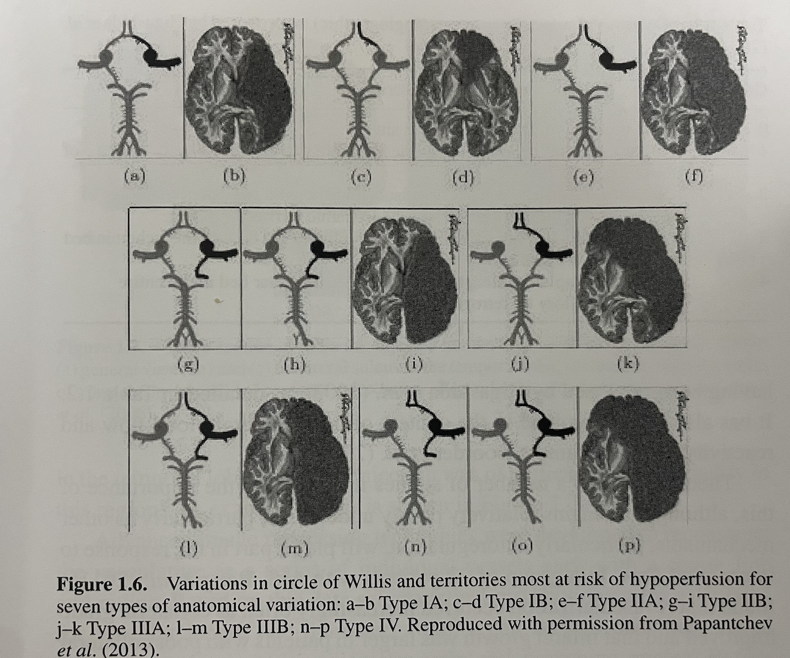
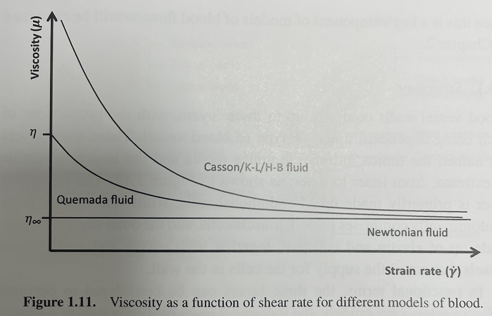
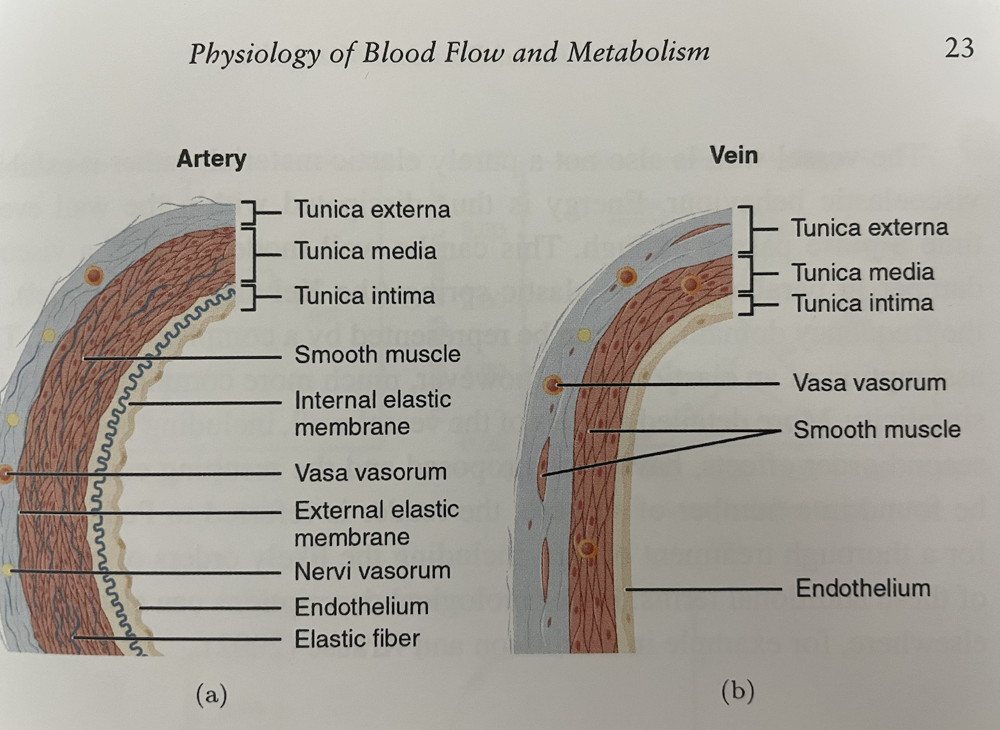
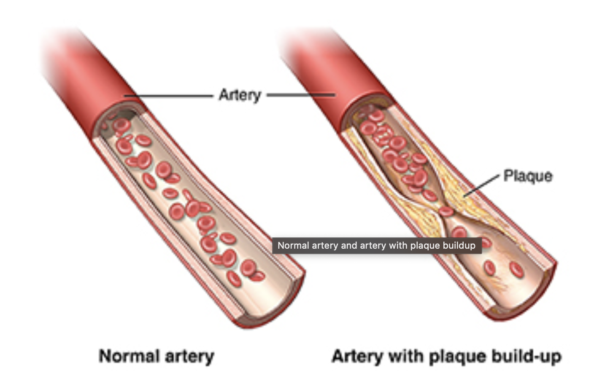

---
{
"layout": "note",
"title": "Cerebral Circulation & composition",
"journal": true,
"section": "Study",
"topic": "Blood Flow and Metabolism",
"excerpt": "지난 시간 뇌동맥, 뇌정맥의 구조에 대해서 알아보았고, 이제 혈액 순환에 대해서 알아보도록 하겠습니다 아주 재밌는 사실은, 바로 지난 포스터에서 배운 The circle of Willis 가 왜 존재하는 지 입니다. 신기하게도, 거의",
"classes": "wide",
"permalink": "/blog/biomechanics/blood-flow-and-metabolism/cerebral-circulation-composition/",
"study_area": "Mechanical",
"date": "2024-09-21",
"source_url": "https://jeffdissel.tistory.com/84",
"header": {
"teaser": "/blog/biomechanics/blood-flow-and-metabolism/cerebral-circulation-composition/images/img-001.png"
}
}
---
{% raw %}지난 시간 뇌동맥, 뇌정맥의 구조에 대해서 알아보았고,
이제 혈액 순환에 대해서 알아보도록 하겠습니다
아주 재밌는 사실은, 바로 지난 포스터에서 배운
The circle of Willis
가 왜 존재하는 지 입니다.
신기하게도, 거의 모든 표유류 동물들의 뇌에는 저희같은
고리모양의 동맥이 존재하고,
그 이유는 아래 그림처럼 바로 고리가 끊겨도 반대 경로로 혈액을 공급하기 위해서 라는 것입니다..

그리고 통계자료에 따르면, 58.7% 의 사람들이 즉, 거의 절반 넘는 일반인들의 고리가
끊겨 있다고 합니다.
여기까지가 해부학적 내용이고, 이제 유체역학이 전공인 만큼.
유체이야기로 넘어가 보겠습니다 ㅎㅎ
Blood comprises
red blood cells (erythrocyes)
white blood cells (leukocytes)
platelets
plasma(pale yellow fluid,proteins,electrolyes)
여기서 중요한 한가지는
Osmotic pressure of Plasma
(즉, 플라즈마 안에 있는 삼투압)
만약에 혈관벽 내부(플라즈마)와 외부의 압력이 다르다면
-> 물이 이동 -> 혈액의 농도가 달라짐 -> 혈액의 점성 변화
(특히, 플라즈마는 뉴턴 점성을 띄므로 아주 중요!!)
혈액에서 가장 중요한
(Red blood Cells) 부터 살펴보자.
65% 물
32% 헤모글로빈(산소운반)
3% Membrane component
핵심은, cell mambrane 의 phospholipid bilayer
이 Elastic property -> Young's Modulus : 10^5-6 N/m^2
라는 것.
유체의 유동에서 the most important property is
Viscosity
즉, 혈액의 점성이 가장 중요하고,
그 점성에 영향을 끼치는 요소 중 하나가 바로 적혈구의 탄성이다.
밑의 사진의 위 곡선이 바로, 혈액의 shear stress-strain rate graph

fluid mechanics 시간에 다루었지만,
뉴턴유체는
shear stress and strain rate are in the proportional relationship
하지만, blood 는
strain rate가 크면 -> 뉴턴유체의 성질
strain rate가 작다면 -> pseudoplastic regime(비뉴턴)
strain rate 가 크다 -> 속도 변형이 크다 -> 반지름이 큰 vessel flow
즉, 반지름이 큰 artery 의 경우 뉴턴유체의 가정을 해도 합리적이라는 것.
아주 중요하다
왜냐하면 보통 뉴턴유체의 가정을 통해서
상황을 굉장히 단순화 시키고
또 그렇게 하였을 때,
결과값이 비뉴턴유체의 복잡한 계산식과
비슷한 경우가 많기 때문에
//물론 동맥의 경우만//
그렇다면, Non-Newtonian Boold flow 의 경우는
How should we analyze?
다양한 모델들이 있지만, 결론적으로는 Empirical data를
fitting 한것에 불과하다.
1. Casson model
2. K-L model
3. H-B model

살짝 식들마다 다르지만, 핵심은 strain rate가 작을때, 점성이 유독 커진다.
그 이유는 바로 혈관이 작으면, elastic 한 적혈구가 혈관벽에 영향을 미치는 정도가 커지기 때문이다.
자세한 것은 추후에 설명 할 예정^^
이제
혈관의 구조
에 대해서 자세하게 알아보자.
혈관은 아주 신기하게, 탄성력을 가지고 있다. 즉, 근육이 중간에 있다는 것.

바깥쪽부터,
TUNICA EXTERNA
- elastin + collagen
+ nerves + small blood vessels
-role: support and connect the vessel to the surrounding tissues.
TUNICA MEDIA
- muscle cells
-role: control vessel tone
TUNICA INTIMA
- endothelial cells
-role: sensor for Wall shear stress
각자의 역할이 있고, 그 역할이 중요한 혈관은 해당 부위가 커진다.
(e.g)
대동맥 - 강한 근육이 필요하므로(심장바로앞) - Tunica media가 크다.
모세혈관(capillaries) - thin walls - no muslce - 아주 약한 압력 즉, 근육 쓸모가 없다.
가장 흔한 질병 중 하나이고, 연구 주제중 하나인
동맥경화증(Artherosclerosis)
고혈압, 흡연, 고지방식 -> 내막손상
-> 손상된 내막에 LDL cholesterol invade
(Low density lipoprotein cholesterol)
-> Plaque 형성 (칼슘,섬유질, 콜레스테롤로 구성)
-> 혈관 좁아짐 (혈류방해)

(Plauqe에 대해서는 개별 포스터로 다루겠습니다^^){% endraw %}